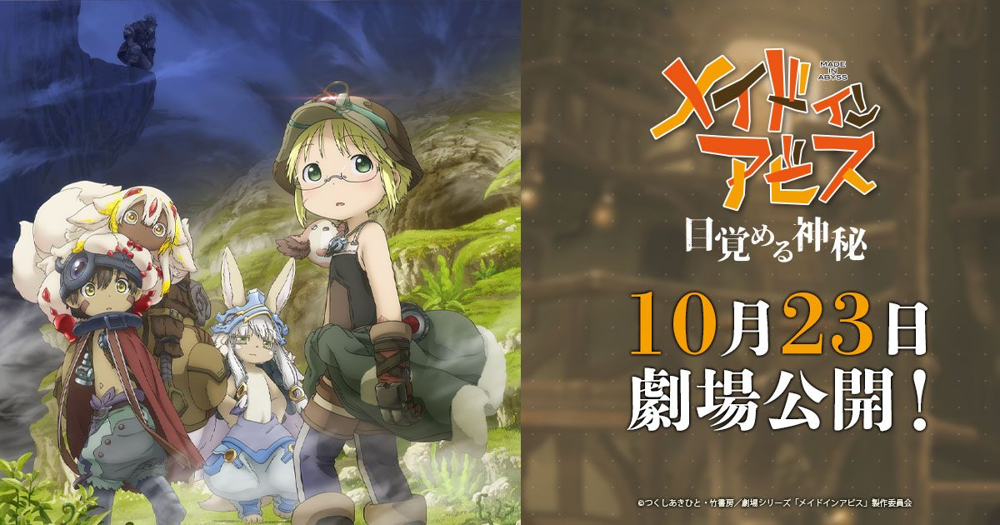

2026-08-19 · 动漫深读
8 月 6、7 日连着两天，Kinema Citrus 把《来自深渊 觉醒的神秘》(Made in Abyss: Mezameru Shinpi) 的主预告甩了出来。距离上一部正经剧情作《烈日的黄金乡》(2022) 已经过去快四年——这次不是总集篇，是全新剧场版三部曲的第一部。深渊的梯子，终于又往下放了。

《来自深渊》这 IP 的脾气老粉都懂：TV 第一季封神，第二季补足，中间夹过总集篇，2022 年《烈日的黄金乡》算是把动画线推到了一个相对完整的段落。但从那以后，屏幕上一片安静。所以当「新剧场版三部曲」这个说法出现时，懂行的人第一反应不是「又来圈钱」，而是「终于要往下讲了」。
关键在于它明确是 continuation（续作），不是 recap（总集篇）。在如今遍地「新作其实就是老片段重新剪辑」的环境里，这句话的分量，比任何预告都重。
定档很硬：2026 年 10 月 23 日日本上映。制作班底还是那套让人安心的配置——Kinema Citrus 操刀，监督小岛正幸。剧情承接《烈日的黄金乡》之后，莉可、雷格、娜娜奇、法普利姆继续下探，这一次的目标地是传说中的第七层。
新角色两个：Tepaste（森下悠里 / Sumire Morohoshi 配音）、Cravagli（星野贵纪 / Takanori Hoshino 配音）。这两个名字在原作党耳朵里是有信号的——意味着动画这回不只是「复刻已知」，而是在往原作更深处、也可能是更未知的地带探。是原创扩展还是原作登场，现在卖关子，但光这个配置就够老粉兴奋一阵。
音乐这块才是「定心丸级」的好消息：Kevin Penkin 回归，主题曲《Chain of the Abyss》还拉来了 Mori Calliope 献声。Penkin 的配乐几乎是《来自深渊》灵魂的一半，「深渊的上升」那段旋律一响，鸡皮疙瘩是生理反应。这次和 Mori Calliope 的组合意外地贴——一个负责氛围，一个负责叙事感，刚好压住第七层那种「美到让人不安」的调性。
原作漫画的进度，读者都清楚：第六层「来无回之乡 / 奈落之底」之后，第七层是更黑、更迷人的未知。动画选择从这里切入，说明它既不急着「完结」骗票房，也没在「安全区」里打转——它在赌原作最黑暗也最迷人的那块地带，正是观众最想看的。
对比一下前作的节奏会更明白：TV 一二季是慢热铺陈，《烈日的黄金乡》更偏「番外质感」的一段旅程。而本作直接点名「主线推进」，这意味着三部曲一旦铺开，很可能要把原作后续的大坑一口气填掉。对老粉是狂欢，对新粉却是门槛——你不能直接从第七层空降，前面那些「诅咒」「上升负荷」「生骸」的设定，是理解这一部的地基。
还有个现实问题：10/23 日本上映，海外大概率要延后。这反而给「现在补番」留了一道窗口——你有一两个月时间，把前面该看的看了，等海外定档时就能无缝进场。
我们的评分 期待值 8.8 / 信息量 7.5。扣的那点，是因为目前还是「预告级」信息，具体改编尺度要等上映才揭晓。
我们的观察 它说自己是 continuation 而不是 recap——这点在如今的动画市场里，比「豪华阵容」更稀缺，也更值得信任。
我们的观点 第七层意味着动画终于要碰原作最危险也最迷人的腹地。老粉等了四年，新粉却有入坑门槛；这片子既是礼物，也是过滤器。
我们的案例 / 对比 对比《烈日的黄金乡》的「番外感」，本作明确走「主线推进」；同样是 Kinema Citrus，这一部的野心明显写在标题里——Awakening Mystery，觉醒的神秘。
我们的实验 补番路线给你两条：①完整党——TV 第一季 → 第二季 → 《烈日的黄金乡》→ 本作；②速通党——直接看《烈日的黄金乡》+ 本作，关键设定靠那部的回收也能接上。想进影院前心里有底，走①最稳。
《觉醒的神秘》是《来自深渊》四年来的第一口真气。第七层、Kevin Penkin、Mori Calliope、Kinema Citrus 原班——这套组合拳打出来，老粉基本可以直接把 10/23 圈进日程。对新粉，我的建议是：别等上映才慌，现在到定档之间的这阵子，正是补课黄金期。等灯光暗下来，你总不想到时候连「生骸」是啥都要现问隔壁座吧。